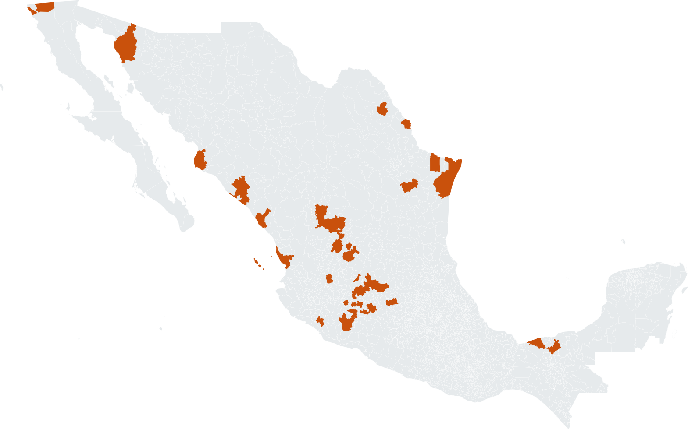
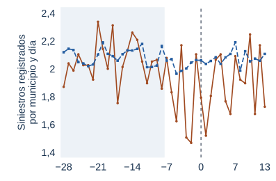
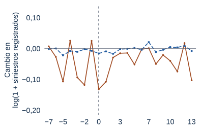
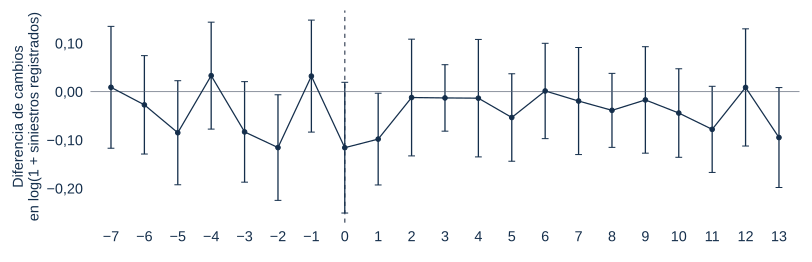

Narcoataques y siniestros viales registrados
Eduardo Garcia Cortez · CU: 207480
Inferencia Causal · ITAM
Contexto
Por qué podrían cambiar los siniestros viales registrados
Mecanismos posibles
Bloqueos o suspensión del transporte
→
Menos circulación
Desvíos
→
Cambios de ruta y de riesgo por vía
Factor humano
→
Cambios al conducir, más atención y cuidado
Interés
Evaluar si los narcoataques tienen un efecto causal sobre los siniestros viales registrados.
Datos
La muestra reúne 77 pares tratados
31 episodios, 32 fechas
Un municipio puede participar en distintas fechas.
Tratamiento
Inicio local de una jornada coordinada de violencia.
Resultado
Siniestros diarios registrados en vías no federales.
54 municipios tratados
765 municipios de control
Elaboración propia con datos de: INEGI (ATUS y covariables), Consejo Nacional de Población (CONAPO) y catálogo propio.
Estrategia empírica
Cómo elegimos los controles para comparar cambios
Municipio tratado
En su fecha de inicio
Candidatos elegibles
Estados ajenos al episodio, con cobertura y sin exposición documentada en la ventana previa.
Accidentes previos, población, empleo y autos comparables.
≥10 candidatos · ≥5 estados
1:muchos
Todos los elegibles
El peso se reparte entre ellos.
1:1
El candidato más cercano
Concentra el peso de los controles.
Estrategia empírica
La base reúne 21 días, del −28 al −8
cuenta los siniestros registrados del municipio en la fecha .
Semana −4−28−27−26−25−24−23−22
Semana −3−21−20−19−18−17−16−15
Semana −2−14−13−12−11−10−9−8
Base común · días −28 a −8 Tramos posterioresSemana −1 · diagnóstico previo
Estrategia empírica
Las filas diarias permiten ajustar por día de la semana
municipio · inicio local · fecha del conteo · tramo · bloque
en la base · en el tramo analizado
Peso por día: en la base y en el tramo. Cada bloque conserva .
Estrategia empírica
Cada grupo se compara con su propia base
Tratados Controles ponderados
Promedios diarios · base sombreada
Cambio respecto a la base
Días respecto al inicio local
Elaboración propia con datos de: INEGI (ATUS y covariables), CONAPO y catálogo propio.
Supuestos
Los grupos ya difieren antes del inicio

Días respecto al inicio local · · Intervalos del 95 % por estado y fecha
Tendencias paralelas: cambios comparables en ausencia del ataque.
Prueba semanal: p = 0,035 por estado y p = 0,081 por estado y fecha.
Elaboración propia con datos de: INEGI (ATUS y covariables), CONAPO y catálogo propio.
Resultados
Añadir covariables cambia poco la estimación inicial
| Variable | | | | |
|---|
| Tratado × Después () | −0,348(0,239) · 0,155 | −0,341(0,239) · 0,164 | −0,341(0,244) · 0,172 | −0,343(0,246) · 0,173 |
|---|
| Logaritmo de población | — | −0,077(0,080) · 0,342 | −0,076(0,078) · 0,336 | −0,075(0,076) · 0,328 |
|---|
| Empleo por mil habitantes | — | — | −0,000026(0,001025) · 0,980 | 0,000006(0,001053) · 0,996 |
|---|
| Autos por mil habitantes | — | — | — | −0,000117(0,000725) · 0,873 |
|---|
En , el intervalo del 95 % es [−0,834; 0,139].
Resultados
La caída estimada es mayor en los días 0 y 1
 · Intervalos del 95 % por estado y fecha
· Intervalos del 95 % por estado y fecha
Los tres intervalos incluyen cero.
Elaboración propia con datos de: INEGI (ATUS y covariables), CONAPO y catálogo propio.
Resultados
Sensibilidad del resultado
| Comparación | Pares tratados | Estimación | Intervalo del 95 % |
|---|
| Base principal: días −28 a −8 | 77 | −0,348 | [−0,834; 0,139] |
|---|
| Base: semana anterior | 77 | −0,191 | [−0,725; 0,343] |
|---|
| Base: día −2 | 77 | 0,185 | [−0,296; 0,666] |
|---|
| Sin feriados ni recesos escolares | 25 | −0,595 | [−1,288; 0,098] |
|---|
| Placebo: inicio 28 días antes | 81 | −0,191 | [−0,569; 0,188] |
|---|
Conclusión
La mayor caída estimada aparece al inicio
Días 0–1
−0,348 siniestros registrados por municipio y día
Intervalo del 95 % [−0,834; 0,139]
Días 2–6 y 7–13
Duración incierta
Ambos intervalos incluyen cero.
Las diferencias previas entre tratados y controles limitan la atribución al ataque.
Respaldos para discusión →
Elaboración propia con datos de: INEGI (ATUS y covariables), CONAPO y catálogo propio.
Discusión
Soporte, balance y pesos
Reglas de elegibilidad
Tres meses completos con registros, territorio estable y ventana previa libre de exposición documentada.
Covariables con medición anterior a y razones entre 0,5 y 2.
Cómo se reparte el peso
reúne los controles elegibles del tratado en .
La mayor diferencia estandarizada observada en 1:muchos es 0,082 en valor absoluto.
Elaboración propia con datos de: INEGI (ATUS y covariables), CONAPO y catálogo propio.
← Índice de respaldos